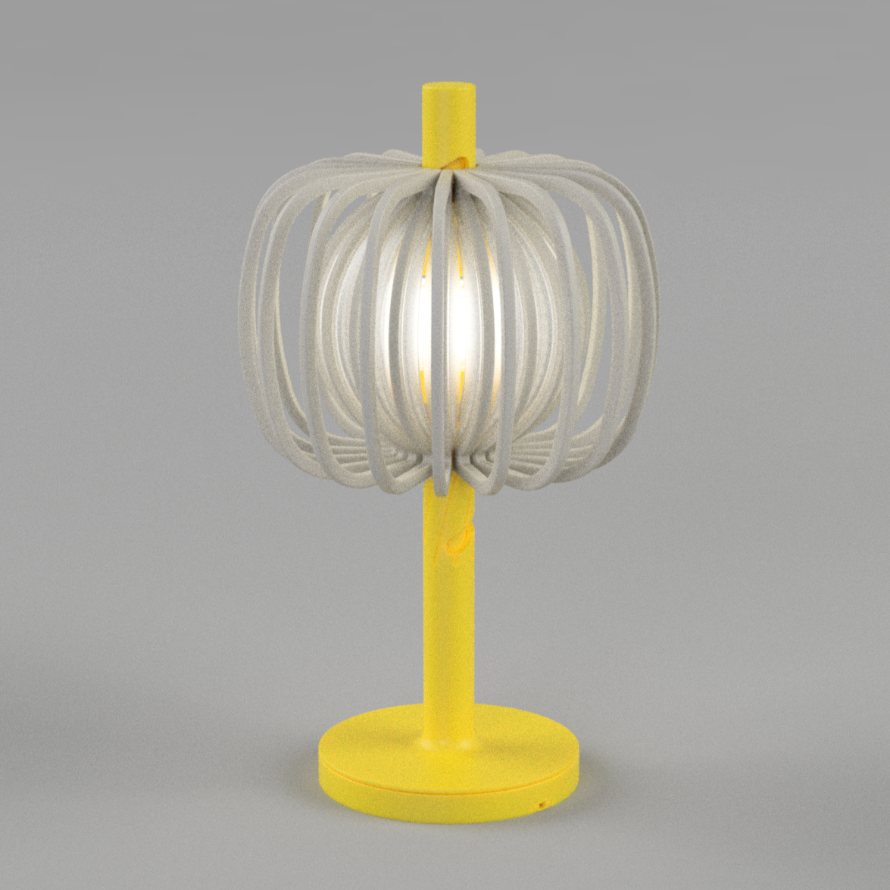
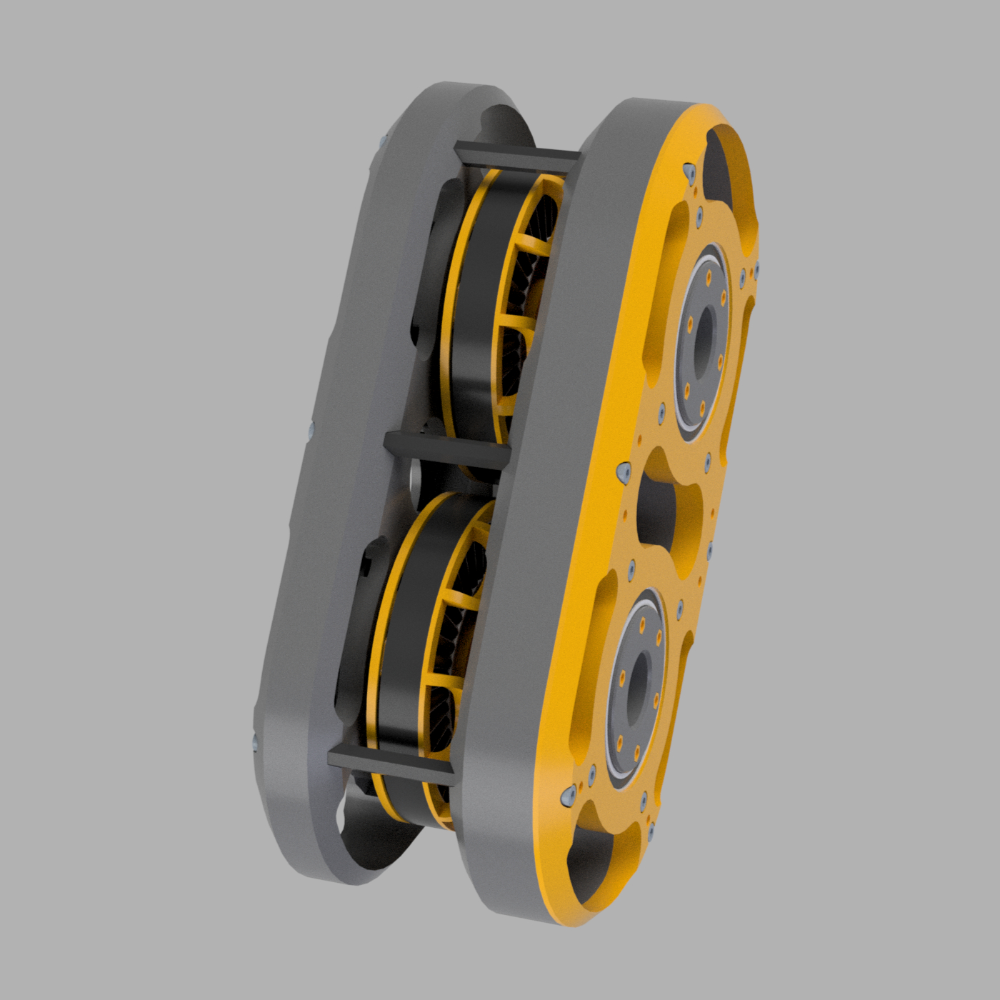
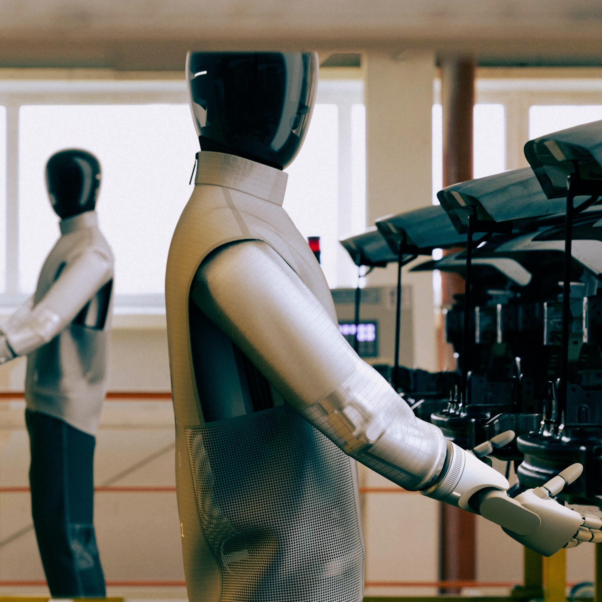

Mechanical Design · Robotic Actuation
Open to 2027 New Grad Roles



May 2026 — Aug 2026
Sep 2025 — Apr 2026
Jan 2025 — Apr 2025
May 2024 — Aug 2024
Sep 2023 — Dec 2023
Jan 2023 — Apr 2023
Science behind running and run training